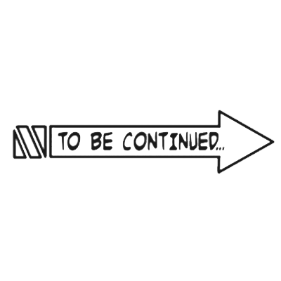

Diavolo Emerges Part 4
- diavolo: WHAT...
- #diavolo: ...DID HE DO TO ME!
- #diavolo: WHAT DID HE DO!
- #diavolo: HE BROKE SOMETHING BEHIND HIS OWN HEAD!
- #trish: THERE'S SOMETHING PEEKING OUT FROM THE CRACKS! IS THAT...
- #diavolo: WHAT WAS THAT?!
- #diavolo: THESE ANTIS-!?/
- #trish: BEHIND ...
- #trish: WHAT DID HE DO TO REQUIEM!?
- #diavolo: HE WAS ABLE TO TOUCH IT!
- #trish: WE CAN TOUCH THE ARROW!
- #trish: HE BROKE REQUIEM!
- #trish: THE BUGS CRAWLING ON THE ARROW ARE GIORNO'S LIFE ENGERY!
- #giorno: ALL GOOD SO FAR ...
- #giorno: HERE WE GO NOW ...
- #giorno: wE'LL HAVE TO HURRY!
- #giorno: WE HAVE TO MAKE IT TO THE ARROW!
- #trish: WAY AHEAD OF YOU!
- #trish: SHOOT THE ARROW! DON'T LET HIM GIT IT,MIS-
- #giorno: Action scene with king crimson
- #trish: GOTCHA!
- #trish: KING CRIMSON MAY BE ABLE TO PERFECTLY FORECAST THE PATHS OF MY BULLETS...
- #trish: BUT AT THIS DISTANCE, IT'S ALL HE CAN DO TO PROCTECT HIMSELF!
- #trish: USE THE REAMINING BULLETS TO KNOCK THAT ARROW BACK TO ME, PISTOLS!
- #diavolo: YOU GRUNTS WITH YOUR FILTHY ABILITIES...!
- #diavolo: AND YOUR TRIFLING INTELLECTS...
- #diavolo: ...WILL NEVER BE ABLE TO SURPASS KING CRIMSON'S FORCASTS...NOR WILL YOU BE ABLE TO CIRCUMVENT THEM!
- #diavolo: NO MATTER HOW FILTHY THEY MAY BE...
- #trish: AAH! AH!
- #buccellati: TH..THE CIV..HE'D ALREADY...
- #buccellati: ...TOSSED HIMINTO THE AIR!
- #trish: HE EVEN PREDICTED THE IMAPACTS OF THE BULLETS! IT WENT BACK TO HIM
- #trish: THE ARROW WENT BACK!
- #diavolo: BUT STIL BUCCELLATI,
- #diavolo: YOUR TEAM HAD ME WORKING UP QUITE A COLD SWEAT.
- #diavolo: I NEVER PREDICTED THAT ANYONE WOULD BE FOOLISH ENOUGH TO BETRAY MY GANG...AND I NEVER EVEN IMAGINED THAT ANYONE WOULD DISCOVER MY IDENTITY, EVER...
- #diavolo: BUT BECAUSE OF YOU I HAVE LEARNED OF THIS ARROW'S TRUE ABILITY!
- #diavolo: BUT BECAUSE OF YOU I HAVE LEARNED OF THIS ARROW'S TRUE ABILITY!
- #diavolo: THIS IS A GIFT!A TRIBUTE THAT FATE HAS GIVEN TO ME FOR OVER-COMING MY PAST!
- #trish: GIMME BULLETS,PISTOLS!
- #trish: WE TOLD YOU,MISTA!
- #trish: THE CARTIRIDGES TAKE TIME TO LOAD!
- #trish: IT'S TOO LATE!
- #trish: I...
- #narractor:
- #Diavolo: W.... WHAT?!
- #NARRACTOR:
- #all: .....
- #spice_girl: Spice G...
- spice_girl: IRL ....
- #spice_girl: YOU NEVER DEFLECTED MISTAS BULLETS ... I JUST ...
- #spice_girl: SOFTENED THEM ...
- #spice_girl: THEY SQUASHED DOWN LIKE CHEWING GUMINSIDE YOUR HANDS ... AND THEN ...
- #spice_girl: USING THAT TENSION, I REVERTED THEM AND SHOT THEM THROUGH.
- #spice_girl: I, TOO...
- spice_girl: CAN OVERCOME... THE FATE I INGERITED FROM YOU... I WILL NOT COWER OR FLEE!
- #spice_girl: IF YOU TRY TO STOP ME ... I SHALL SOAR BEYOND YOU.
- #king_crimson: TRISH...
- #king_crimson: YOU'RE CONSCIOUS...
- #bucciarti: THE ARROW WENT FLYING!
- #trish: IT'S COMING TO ME!
- #trish: HERE IT COMES!
- #bucciarati: SPICEGIRL ... TRISH...
- #giorno: ... ... ...
- #trish: I'M CLOSER!
- #trish: HE CAN'T BEAT ME TO IT!
- #trish: NOT EVEN IF HE ERASES TIME AND FORCASTS WHERE IT'LL LAND!
- #trish: I'M CLOSER TO THE ARROW!
- #king_crimson: IF ONLY...
- #king_crimson: MY DAUGHTER ...
- #king_crimson: IF ONLY ...
- #king_crimson: ... YOU HAD NEVER BEEN BORN ...
- #king_crimson: FEAR TRULY DOES COME FROM THE PAST ...
- #king_crimson: NOW YOU'VE REALLY MADE ME MAD!
- #giorno: WHAT ...!?
- #king_crimson: GACK! YOU WANT TO OVERCOME ...?
- #king_crimson: YOU'LL GET YOUR WISH, THEN...
- #king_crimson: TRISH ...
- #king_crimson: NOW YOU ARE SOARING ... BEYOND YOUR PAST ... ADN THEIR HEADS ...
- #bucciarati: TRIIIIII-ISH!!
